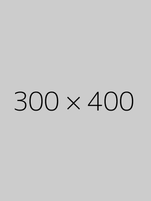

Outfitter for All Seasons!
We take pride here in Faylona Outfitters on showing trendy outfits for all ages. From streetwear to classic styles. We cover all ages and all styles. We have everything to satisfy you! From the white sneakers, the classy peacoats, the rugged denim jackets, the comfortable sherpa jackets, the slim jeans for the younger demographic, the regular straight jeans for the mature demographic and more! Click the options about to take a look and see how our pieces work together! 
Streetwear is a style of casual clothing which became global in the 1990s. It grew from New York hip hop fashion and eventually California surfskate culture, to encompass elements of sportswear, punk and Japanese street fashion. Eventually haute couture became an influence. It commonly centers on "casual, comfortable pieces such as jeans, T-shirts, baseball caps, and sneakers", and exclusivity through intentional product scarcity. Enthusiasts follow particular brands and try to obtain limited edition releases.
Classic describes your style perfectly. You prefer timeless looks, beautiful but simple cuts in clothing, fine natural fabrics, and leather shoes and handbags. Tradition is important to you. You may occasionally become frustrated when you can't find the exact style of a beloved item of clothing, handbag, or shoe that has worn out. And you frequently keep your fashion accessories and clothing until they are worn, just because much of what you buy does not go out of style. Although you won't be the flashiest person in a room, you will always look good.
Business demands a tailored look, in your opinion, and so tailored has become your mantra in the workplace. You don't mind wearing a suit to work. If you were notified at work that you had to give a presentation to a large group in an hour, you wouldn't worry that you were dressed inappropriately. You tend to dress a bit more formally than your co-workers.